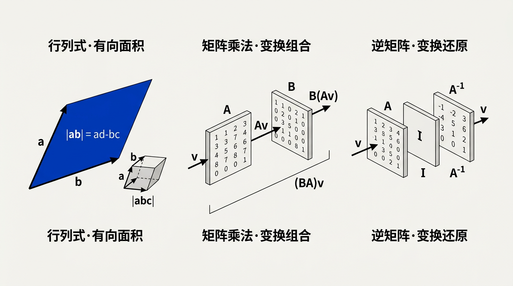
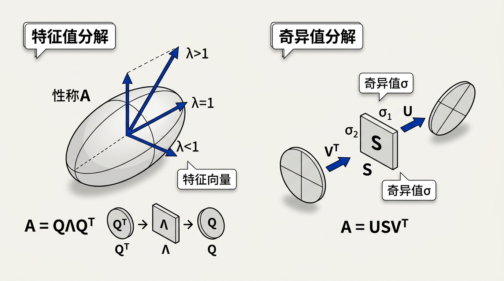

本讲义基于 Steve Marschner & Peter Shirley 所著《虎书》（Fundamentals of Computer Graphics）第5版第6章（p.127-142）线性代数。
图形学的数学基础——行列式、矩阵运算（逆矩阵/外积/正交矩阵）、克拉默法则、特征值分解与SVD。本章为第7章变换矩阵做铺垫。
本版插画采用 Guizang 材质插画风格重新绘制。

矩阵在计算机图形学中被频繁使用，用途广泛，包括表示空间变换。在本章的讨论中，我们假设矩阵的元素都是实数。本章描述了矩阵算术的运算机制以及"方阵"的行列式（determinant）——这些矩阵是许多图形操作的基础。我们将学习矩阵是如何产生的，以及如何在图形程序中应用它们。本章的目标读者是那些已经接触过线性代数但可能需要复习的人。如果你从未接触过这些内容，本章可能不够详尽——建议在继续之前先学习一本完整的线性代数教材。但对于已经了解基础知识的读者，本章确实涵盖了与计算机图形学直接相关的关键主题：行列式、矩阵运算、特征值和奇异值分解。简而言之，图形学就是将线性代数公式映射到屏幕像素上的艺术——深入理解行列式、特征值和矩阵分解，能省下数月的调试时间。
我们通常将矩阵视为一组以列（或行）排列的向量。这自然会引发一个问题：这些向量具有什么性质的几何意义？一组二维向量的行列式（determinant）——记作 |ab| 或 det([a,b])——是由两个向量 a 和 b 张成的平行四边形的有向面积（signed area）。这里"有向"意味着符号很重要：如果 a 和 b 是右手系的（即从 a 到 b 的最小角度旋转是逆时针的），面积为正；如果是左手系的，面积为负。在三维中，三个向量 a、b、c 的行列式——det([a,b,c])——是由这三个向量张成的平行六面体（parallelepiped）的有向体积。这个性质自然地推广到更高维度：n 个 n 维向量张成的 n 维"超平行体"的有向 n 维体积。
想一想：行列式为什么叫"行列式"？"determinant"一词源于它能够"确定"（determine）一个线性方程组是否有唯一解。具体来说，行列式非零 ⇔ 方程组的系数向量线性无关 ⇔ 解存在且唯一。这个判断性质在图形学中反复出现：判断三个法向量是否定义了合法坐标系、判断一个光照矩阵是否退化、或判断一个求交计算（如光线-三角形）是否有解。
行列式支持几种推导其值的运算。我们可以将任意向量加到另一个向量上而不改变行列式的值（这对应了平行四边形的剪切变换——保持面积不变）。缩放任意向量会将行列式按相同因子缩放（面积比例缩放）。如果任意两个向量交换，行列式的符号会反转（取向翻转）。更重要的是，如果其中一个向量是另外两个向量的线性组合，行列式为零——即向量是线性相关（linearly dependent）的。因此行列式天然地用作线性相关性的测试工具。
行列式通过将方阵映射到标量来形式化这一几何概念。一个 n×n 矩阵 A 的行列式记为 det(A) 或 |A|。对于一个 2×2 矩阵，行列式的计算公式为：
|a b| A = |c d|, det(A) = |a b; c d| = ad − bc
这个公式的几何含义非常直观：ad 是矩形的面积，bc 同样是矩形的面积，差 ad−bc 恰好等于平行四边形（由两列向量张成）的有向面积。这个简单的公式是推导高维行列式的基础。
生活类比：行列式就像是一个"扩张/收缩测量仪"。想象有一块方形的橡皮泥，假设有一个矩阵 A 代表一种变形（拉伸、挤压、旋转）。把橡皮泥上所有点都用 A 变换，橡皮泥的体积会变为原来的 |det(A)| 倍。如果 |det(A)| = 2，橡皮泥膨胀了两倍；如果 |det(A)| = 0，橡皮泥被压扁到没有体积（变成一个平面、一条线甚至一个点）。在游戏引擎中，当模型矩阵的缩放行列式为零时，整个模型会被压缩消失。
对于更大的矩阵，行列式通过拉普拉斯展开（Laplace expansion）递归定义。其思想是：将 n×n 矩阵的行列式表达为 n 个 (n−1)×(n−1) 行列式的带符号和，然后每个 (n−1)×(n−1) 行列式又展开为 (n−1) 个 (n−2)×(n−2) 行列式，如此递归下去，直到简化为 2×2 的情形。
第一步：2×2 基准情况
|a b; c d| = ad − bc
第二步：3×3 沿第一行展开
|a₁₁ a₁₂ a₁₃| |a₂₁ a₂₂ a₂₃| = a₁₁·|a₂₂ a₂₃; a₃₂ a₃₃| − a₁₂·|a₂₁ a₂₃; a₃₁ a₃₃| + a₁₃·|a₂₁ a₂₂; a₃₁ a₃₂| |a₃₁ a₃₂ a₃₃|
这里，每一项由一个"主元素"a₁ⱼ（从第一行取）乘上一个 (n−1)×(n−1) 的子行列式（minor determinant）——即删除 a₁ⱼ 所在行和列后剩余矩阵的行列式。符号遵循 (−1)^{1+j}，形成 +、−、+ 交替的模式。
第三步：一般 n×n 展开公式
沿矩阵 A 的第 i 行展开，行列式为：
n
det(A) = Σ (−1)^{i+j} · a_{ij} · M_{ij}
j=1
其中 a_{ij} 是第 i 行第 j 列的元素，M_{ij} 是删除第 i 行和第 j 列后得到的 (n−1)×(n−1) 子矩阵的行列式——称为余子式（minor）。乘积 C_{ij} = (−1)^{i+j}·M_{ij} 称为代数余子式（cofactor）。完整的棋盘符号图案（checkerboard sign pattern）对于 4×4 矩阵为：
+ − + −
− + − +
+ − + −
− + − +
该图案遵循简单规则：位置 (i,j) 的符号为正当且仅当 i+j 为偶数。
为了真正理解拉普拉斯展开的"递归"本质——每一层都将高阶问题归约为低阶问题——我们用一个带具体数字的 4×4 矩阵来逐步展示：
[2 −1 0 3]
[1 4 −2 1]
A = [0 3 5 −1]
[2 1 3 0]
第 1 层：沿第一行展开 4×4 → 转化为 4 个 3×3
选择第一行 (2, −1, 0, 3) 作为展开行。符号按 (−1)^{1+j}：+(j=1), −(j=2), +(j=3), −(j=4)：
det(A) = (+1)·2·M₁₁ + (−1)·(−1)·M₁₂ + (+1)·0·M₁₃ + (−1)·3·M₁₄
= 2·M₁₁ + 1·M₁₂ + 0 − 3·M₁₄
其中每个 M_{1j} 是删除第 1 行和第 j 列后的 3×3 子矩阵的行列式。例如 M₁₂ 来自：
删除第1行和第2列后： [1 −2 1]
[0 5 −1]
[2 3 0]
第 2 层：每个 3×3 展开为 3 个 2×2
以 M₁₂ 为例，沿其第一行 (1, −2, 1) 展开：
M₁₂ = 1·|5 −1; 3 0| − (−2)·|0 −1; 2 0| + 1·|0 5; 2 3|
= 1·(5·0−(−1)·3) + 2·(0·0−(−1)·2) + 1·(0·3−5·2)
= 1·(0+3) + 2·(0+2) + 1·(0−10)
= 3 + 4 − 10 = −3
类似地计算 M₁₁、M₁₄，然后组合得到 det(A) 的最终值。整个 4×4 行列式的计算产生了 4 个 3×3 = 12 个 2×2 子行列式，每个 2×2 需要 2 次乘法和 1 次减法——总共 12×2 = 24 次乘法加上符号分配。这与 n! = 4! = 24 的理论计数一致。
展开树的几何直觉：将拉普拉斯展开想象为一棵"展开树"。根节点是 n×n 行列式，它分出 n 个子节点（每个 (n−1)×(n−1)），每个子节点又分出 n−1 个孙子节点（每个 (n−2)×(n−2)），依此类推。叶子节点都是 2×2 的基准情况（ad−bc）。这棵树的总叶子数 = n·(n−1)·(n−2)·…·3 = n!/2，每个叶子需要 2 次乘法，故总乘法次数 = n!。对于 n=10，这已是 3,628,800 项——即使是现代 CPU 也需要可观察的时间来完成。
想一想：拉普拉斯展开的 O(n!) 复杂度并非纯粹的"理论问题"。在计算机代数系统（如 Mathematica、SymPy）中，当处理符号矩阵（元素是表达式而非数值）时，拉普拉斯展开通常是唯一可靠的方法——因为高斯消元法在符号计算中会产生极繁的分数表达式。例如，计算一个 8×8 符号矩阵的 det，用 Mathematica 的 Det 函数内部会在"拉普拉斯展开"和"多项式插值法"之间自动选择。在图形学的预处理工具（如着色器编译器中的符号微分、纹理变换公式推导）中，经常会遇到需要符号行列式的情形。
位置 (i,j) 的符号由 (−1)^{i+j} 决定。下表给出 4×4 矩阵所有 16 个位置的符号计算过程：
| (i,j) | i+j | (−1)^{i+j} | 符号 | (i,j) | i+j | (−1)^{i+j} | 符号 |
|---|---|---|---|---|---|---|---|
| (1,1) | 2 | +1 | + | (3,1) | 4 | +1 | + |
| (1,2) | 3 | −1 | − | (3,2) | 5 | −1 | − |
| (1,3) | 4 | +1 | + | (3,3) | 6 | +1 | + |
| (1,4) | 5 | −1 | − | (3,4) | 7 | −1 | − |
| (2,1) | 3 | −1 | − | (4,1) | 5 | −1 | − |
| (2,2) | 4 | +1 | + | (4,2) | 6 | +1 | + |
| (2,3) | 5 | −1 | − | (4,3) | 7 | −1 | − |
| (2,4) | 6 | +1 | + | (4,4) | 8 | +1 | + |
你可以直接验证：国际象棋棋盘上黑格（i+j 为奇数）对应负号，白格（i+j 为偶数）对应正号——这个简单规则对所有维度都成立。而且，由于 (−1)^{i+j}·(−1)^{j+i} = (−1)^{2(i+j)} = 1，行列式在任何行展开和任何列展开得到的结果一致——这正是拉普拉斯定理的核心保证。
想一想：为什么拉普拉斯展开对于 n>4 的大型矩阵不推荐用于实际计算？因为它的时间复杂度是 O(n!)——随 n 增长极快。对于 n=10 的矩阵，直接拉普拉斯展开需要 ~3.6M 项乘法，对于 n=20 则完全不可能。在实际图形学中，我们改用 LU 分解（O(n³)）或高斯消元来计算行列式。但拉普拉斯展开的理论价值不可替代——它是推导克拉默法则、伴随矩阵公式和特征多项式的基础。
行列式拥有一组既优美又实用的代数性质，每一个在图形学中都有直接的应用场景：
| 性质 | 公式 | 图形学应用 |
|---|---|---|
| 乘积性质 | det(AB) = det(A)·det(B) | 变换组合的体积缩放：先缩放 det(B) 倍再缩放 det(A) 倍 |
| 转置不变性 | det(Aᵀ) = det(A) | 行列式在转置下不变——行和列在行列式的视角下是等价的 |
| 三角矩阵 | det(L) = Π l_{ii} | 对角/三角矩阵的行列式 = 对角线元素的乘积——LU 分解后快速求 det |
| 逆矩阵 | det(A⁻¹) = 1/det(A) | 逆变换的缩放因子是原变换缩放因子的倒数 |
对于 det(AB) = det(A)·det(B) 的证明思路：将矩阵乘法视为线性变换的组合。变换 B 将任意区域放大 |det(B)| 倍，然后变换 A 再放大 |det(A)| 倍，组合效果放大 |det(A)·det(B)| 倍。这就是联合变换 AB 的总体积缩放因子，因此 det(AB) = det(A)·det(B)。这个性质对于判断复合变换（如先旋转再缩放再平移）是否退化的核心依据——只要其中一步的行列式为零，整个变换就会使体积坍缩。
理论推导虽然优雅，但亲手用具体数字验证能建立真正的直觉。考虑以下两个 3×3 矩阵：
[1 2 0] [2 0 1]
A = [0 3 1] B = [1 1 0]
[2 1 2] [0 2 1]
步骤 1：分别计算 det(A) 和 det(B)
det(A) —— 沿第一行展开 (1, 2, 0)，符号为 +, −, +：
det(A) = 1·|3 1; 1 2| − 2·|0 1; 2 2| + 0·|0 3; 2 1|
= 1·(3·2−1·1) − 2·(0·2−1·2)
= 1·(6−1) − 2·(0−2) = 5 + 4 = 9
det(B) —— 沿第一行展开 (2, 0, 1)：
det(B) = 2·|1 0; 2 1| − 0·|1 0; 0 1| + 1·|1 1; 0 2|
= 2·(1·1−0·2) + 1·(1·2−1·0) = 2·1 + 1·2 = 4
步骤 2：计算乘积 AB
[1 2 0] [2 0 1] [1·2+2·1+0·0 1·0+2·1+0·2 1·1+2·0+0·1] [4 2 1]
AB = [0 3 1] · [1 1 0] = [0·2+3·1+1·0 0·0+3·1+1·2 0·1+3·0+1·1] = [3 5 1]
[2 1 2] [0 2 1] [2·2+1·1+2·0 2·0+1·1+2·2 2·1+1·0+2·1] [5 5 4]
步骤 3：计算 det(AB) —— 沿第一行展开 (4, 2, 1)：
det(AB) = 4·|5 1; 5 4| − 2·|3 1; 5 4| + 1·|3 5; 5 5|
= 4·(5·4−1·5) − 2·(3·4−1·5) + 1·(3·5−5·5)
= 4·(20−5) − 2·(12−5) + 1·(15−25)
= 4·15 − 2·7 + (−10) = 60 − 14 − 10 = 36
步骤 4：比较
det(A)·det(B) = 9 × 4 = 36 = det(AB) ✓ 验证通过！
想一想：乘积性质的一个反直觉推论：det(A+B) ≠ det(A) + det(B)。也就是说，行列式是"可乘的"但不是"可加的"——这与"面积缩放"的几何直觉吻合：分别缩放两次然后叠加的物体的总体积 ≠ 各次缩放体积的简单相加。在渲染管线中，阴影矩阵和投影矩阵的复合变换作用于大量顶点时，这一性质保证了"先算所有变换的复合矩阵，再统一变换所有顶点"与"逐个变换相乘"产生相同的体积缩放效果——这就是管线的结合性保证。
矩阵是数字的二维数组。一个 m×n 矩阵有 m 行和 n 列。矩阵之所以如此有用，是因为它们被设计来简洁地表示线性变换（linear transformations）——即将向量映射到向量的函数，且满足两个关键性质：可加性（additivity）T(u+v) = T(u) + T(v) 和均匀性（homogeneity）T(kv) = kT(v)。这是线性代数的核心对偶性：每个线性变换都可以表示为一个矩阵，而每个矩阵对应一个线性变换。
生活类比：线性变换就像是一台"按比例分配"的机器。如果把原料（输入向量）翻倍，产品（输出向量）也翻倍。如果把两种原料混合（加法），输出就是各自产品的混合。这种"比例不变"的性质使得矩阵成为图形变换（旋转、缩放、投影）的绝佳抽象——试想，如果一个旋转操作在放大模型后产生的结果不等于先旋转再放大的结果，那渲染管线会多么混乱。
一个 m×n 矩阵 A 与一个 n×p 矩阵 B 的乘积——记为 AB 或 A·B——是一个 m×p 矩阵 C，其中 C 的第 i 行第 j 列元素由 A 的第 i 行与 B 的第 j 列的点积给出：
n
C_{ij} = Σ A_{ik} · B_{kj}
k=1
完整的矩阵乘法公式（以 2×2 为例展开）：
A·B = [a₁₁ a₁₂; a₂₁ a₂₂] · [b₁₁ b₁₂; b₂₁ b₂₂]
= [a₁₁·b₁₁+a₁₂·b₂₁ a₁₁·b₁₂+a₁₂·b₂₂]
[a₂₁·b₁₁+a₂₂·b₂₁ a₂₁·b₁₂+a₂₂·b₂₂]
具体数值示例：
A = [1 2; 3 4], B = [5 6; 7 8]
A·B = [1·5+2·7 1·6+2·8] = [19 22]
[3·5+4·7 3·6+4·8] [43 50]
关键在于内维数必须匹配：A 的列数（n）必须等于 B 的行数（n）。如果这个不匹配，乘法没有定义。得到的矩阵 C 的维度由外维数决定：m 行（来自 A）× p 列（来自 B）。就像流水线：A 消耗 n 维输入产生 m 维输出，B 消耗 p 维输入产生 n 维输出——要串联两者，B 的输出维度 n 必须等于 A 的输入维度 n。
矩阵乘法具有以下代数性质：
非交换性不是抽象的理论"怪癖"——它在图形学中直接导致可见的渲染错误。考虑以下 2×2 反例：
[1 2] [0 1] A = [3 4], B = [2 0]
先算 AB：
[1·0+2·2 1·1+2·0] [4 1] AB = [3·0+4·2 3·1+4·0] = [8 3]
再算 BA：
[0·1+1·3 0·2+1·4] [3 4] BA = [2·1+0·3 2·2+0·4] = [2 4]
可见 AB = [[4,1],[8,3]] 而 BA = [[3,4],[2,4]]——完全不同。这不是一个特例，而是一般规则：对于随机选取的方阵，AB ≠ BA 的概率接近 1（除非 A 和 B 碰巧可交换——比如两者都是对角矩阵、或者一个是标量矩阵的缩放）。
在图形学中这意味着什么？考虑 3D 模型变换矩阵 M = T·R·S（平移·旋转·缩放）。顶点 p 通过 M·p 变换——这等价于先缩放、再旋转、最后平移。如果写成 S·R·T，意味着先平移、再旋转、最后缩放——结果会完全不同：旋转不再围绕物体本地中心，缩放也会作用在已平移后的坐标上。OpenGL/DirectX 初学者遇到"模型旋转到场景外"的 bug，90% 的原因都是矩阵乘法顺序错误。
生活类比："先穿袜子再穿鞋"与"先穿鞋再穿袜子"——结果完全不同。这就是非交换性的活生生体现。类似地，在 3D 引擎中，"将汽车绕自身中心旋转 90°，再平移到街道位置"产生一辆正面朝向街道的汽车；而"先平移到街道，再绕世界原点旋转"则产生一辆飞到远处的车——因为旋转中心变了。矩阵的非交换性正是这种"顺序敏感性"的数学表述。
想一想：矩阵乘法的"奇怪"规则不是任意的——它是被精心设计的，以确保 AB 恰好表示"先应用 B 再应用 A"的组合线性变换。如果你想设计一个矩阵 C，使得对于所有向量 x 有 C·x = A·(B·x)，那么通过展开可以证明 C 的元素必须满足 C_{ij} = Σ_k A_{ik}·B_{kj}。这正是矩阵乘法的定义。任何其他"点对点"的乘法规则都无法保持这种组合性质。
矩阵转置（transpose）Aᵀ 交换行和列的位置：
(Aᵀ)_{ij} = A_{ji}
对于 3×3 矩阵的转置示例：
[1 2 3]ᵀ [1 4 7]
A = [4 5 6] → [2 5 8]
[7 8 9] [3 6 9]
转置的核心性质是乘积的转置：(AB)ᵀ = BᵀAᵀ —— 注意顺序反转！这在推导法线变换公式时尤其重要：如果顶点通过矩阵 M 变换，则法线必须通过 (M⁻¹)ᵀ 变换以保持与切平面的垂直关系。
单位矩阵（identity matrix）I 是对角线全为 1、其他地方全为 0 的方阵：
[1 0 0]
I₃ = [0 1 0]
[0 0 1]
对于任意矩阵 A，有 IA = A 和 AI = A（前提是维度兼容）。I 是矩阵乘法的单位元，就像数字 1 是乘法单位元一样。I 也是对称矩阵（symmetric）：I = Iᵀ，并且是正交矩阵（orthogonal matrix），因为它的每一列（视为向量）具有单位长度且列之间彼此正交。
一个方阵 A 的逆矩阵（inverse）A⁻¹ 满足 A⁻¹A = AA⁻¹ = I。可逆性的充要条件是：A 的行列式非零（det(A) ≠ 0），等价于 A 的列（和行）线性无关。换句话说，如果 det(A) = 0，则 A 不可逆——它是奇异的（singular）。
对于 2×2 矩阵，逆矩阵有封闭的简洁公式：
[a b] 1 [ d −b]
若 A = [c d], 则 A⁻¹ = ─── [−c a] （前提 det(A)=ad−bc ≠ 0）
ad−bc
对于 n>2 的大型矩阵，逆矩阵通常通过数值方法（如 LU 分解、高斯-约旦消元法）计算，O(n³) 的时间复杂度在实践中远优于直接公式（基于伴随矩阵的公式也涉及 O(n·n!) 的拉普拉斯展开）。在图形学中，我们经常利用矩阵的特殊结构来加速求逆——例如正交矩阵的逆就是它的转置。
想一想：可逆矩阵就像一个"可撤销"的操作。如果你把一张纸揉皱（奇异变换——体积变为零），你就无法完全将它恢复到原始状态（没有逆操作）。但如果你只是旋转它（正交变换——行列式=1），只需反向旋转就能恢复原状（逆 = 转置）。在编辑器中执行"撤销"(Undo)时，通常存储变换的逆矩阵来还原物体的原始位置和朝向。
正交矩阵（orthogonal matrix）是方阵 Q，其转置等于其逆：
Qᵀ = Q⁻¹ ⇔ QQᵀ = I ⇔ QᵀQ = I
性质证明：Q 的每一列（视为向量）具有单位长度：q_i · q_i = 1；不同列之间相互正交：q_i · q_j = 0 (i ≠ j)。这是因为：
(QᵀQ)_{ij} = Σ_k (Qᵀ)_{ik}·Q_{kj} = Σ_k Q_{ki}·Q_{kj} = (col_i of Q)·(col_j of Q) = δ_{ij}
其中 δ_{ij} 是克罗内克 δ 函数（Kronecker delta）——当 i=j 时为 1，否则为 0。这意味着 QᵀQ = I，所以 Q 的列是标准正交的。反过来，由 QQᵀ = I 可推出 Q 的行也是标准正交的：对于方阵，列的标准正交性与行的标准正交性是等价的。
条件 QᵀQ = I 对 3×3 正交矩阵 Q 产生了 n(n+1)/2 = 6 个独立标量约束条件（而非 n² = 9 个，因为对称性）。这解释了为什么 3D 旋转只有 3 个自由度（3 个 Euler 角，或 1 个轴角对）。
设 Q 的列为 q₁, q₂, q₃，则 QᵀQ = I 等价于：
列归一化条件（3 个条件，来自对角线）：
(1) q₁·q₁ = q₁₁² + q₂₁² + q₃₁² = 1 （第 1 列是单位向量） (2) q₂·q₂ = q₁₂² + q₂₂² + q₃₂² = 1 （第 2 列是单位向量） (3) q₃·q₃ = q₁₃² + q₂₃² + q₃₃² = 1 （第 3 列是单位向量）
列正交性条件（3 个条件，来自上三角：QᵀQ 是对称的，下三角条件相同）：
(4) q₁·q₂ = q₁₁·q₁₂ + q₂₁·q₂₂ + q₃₁·q₃₂ = 0 （第 1 列 ⟂ 第 2 列） (5) q₁·q₃ = q₁₁·q₁₃ + q₂₁·q₂₃ + q₃₁·q₃₃ = 0 （第 1 列 ⟂ 第 3 列） (6) q₂·q₃ = q₁₂·q₁₃ + q₂₂·q₂₃ + q₃₂·q₃₃ = 0 （第 2 列 ⟂ 第 3 列）
因此 自由参数的数量 = 9 个矩阵元素 − 6 个独立约束 = 3 个——这正是 3D 旋转的自由度数。任何绕任意轴的旋转矩阵 R₃×₃ 都自动满足这 6 个条件：
例如绕 z 轴旋转 θ 角： [cosθ −sinθ 0]
[sinθ cosθ 0]
[ 0 0 1]
验证约束(1): cos²θ + sin²θ + 0 = 1 ✓
验证约束(4): cosθ·(−sinθ) + sinθ·cosθ + 0·0 = −cosθ·sinθ + sinθ·cosθ = 0 ✓
验证约束(5): 0 + 0 + 0 = 0 ✓ 验证约束(6): 0 + 0 + 0 = 0 ✓
想一想：正交矩阵的 6 个约束并非完全独立——它们一起保证了行列式 det(Q) = ±1（旋转对应 +1，含反射的对应 −1）。在图形学中我们几乎总是使用 det(Q)=+1 的正交矩阵（真正的旋转），因为含有反射的变换会翻转法线方向（使光照突变）或使三角面片的正面背面翻转（需要 glFrontFace 纠正）。想验证一个模型矩阵是否合法？检查其旋转部分的 3×3 子矩阵——若 QᵀQ ≈ I 且 det(Q) ≈ 1（在浮点误差范围内），则旋转是刚性的。
正交矩阵代表图形学中最基础的刚性变换——旋转和反射。它们保持向量长度不变（||Qv|| = ||v||），保持点积不变（(Qu)·(Qv) = u·v），因此保持角度和距离不变。这就是为什么游戏引擎中的所有旋转矩阵（绕任意轴的 3D 旋转）都是正交矩阵。
外积（outer product）——列向量左乘行向量——产生秩为 1 的矩阵。对于两个三维向量 a = [a_1, a_2, a_3]ᵀ 和 b = [b_1, b_2, b_3]ᵀ，外积的完整 3×3 展开为：
[a₁] [a₁·b₁ a₁·b₂ a₁·b₃]
abᵀ = [a₂] · [b₁ b₂ b₃] = [a₂·b₁ a₂·b₂ a₂·b₃]
[a₃] [a₃·b₁ a₃·b₂ a₃·b₃]
外积 C = abᵀ 是一个 3×3 矩阵，其中元素 C_{ij} 由第 i 分量 a_i 与第 j 分量 b_j 直接相乘得到：
C₁₁ = a₁·b₁ C₁₂ = a₁·b₂ C₁₃ = a₁·b₃ C₂₁ = a₂·b₁ C₂₂ = a₂·b₂ C₂₃ = a₂·b₃ C₃₁ = a₃·b₁ C₃₂ = a₃·b₂ C₃₃ = a₃·b₃
这个矩阵有一个极其特殊的结构：
用具体数字验证——取 a = [3, 1, 4]ᵀ, b = [2, 7, 1]：
[3] [3×2 3×7 3×1] [6 21 3 ]
abᵀ = [1] · [2 7 1] = [1×2 1×7 1×1] = [2 7 1 ]
[4] [4×2 4×7 4×1] [8 28 4 ]
外积还有两个值得注意的性质：
想一想：外积的秩为 1 特性在图形学中有许多低调的应用。例如，在阴影映射中，将视线方向 (view direction) 作为 a 和光源方向 (light direction) 作为 b 构造外积，得到的矩阵可以分离出阴影的"主要方向结构"。在图像处理中，外积常用于构造滤波核（如 Gaussian 核 g(x)·g(y)ᵀ，省去完整 2D 卷积的计算）。在物理模拟中，角速度的叉积矩阵 [ω]×（用于计算切线速度 v=ω×r）也可以用外积表示：ω×r = [ω]×·r，而 [ω]× 本质上是两个向量的外积生成的反对称矩阵。
生活类比：外积就像一张"所有配对"的乘法表。想象餐厅菜单：左边列是三种主菜（牛肉/鸡肉/素食），上边行是三种配菜（米饭/薯条/沙拉）。外积产生 3×3 张格——每个格子是你选择某主菜+某配菜的总热量。整张表的结构完全由"每种主菜的基础热量"和"每种配菜的基础热量"这两个维度的信息决定——这正是外积"秩为1"的直观含义。
行列式在几何解释中的核心地位怎么强调也不为过。由矩阵列所定义的向量张成的平行六面体的有向体积就是行列式的值。如果行列式为零，体积为零——意味着其中至少一个列向量是其他列向量的线性组合：这些向量线性相关（linearly dependent），矩阵是奇异的（singular），没有逆矩阵。这个简单的性质支撑着无数的图形算法：测试三个向量是否共面（光线与三角形求交的几何前提），检查一个坐标系是否已退化（如两个基向量碰巧平行），或计算三角形的面积。
克拉默法则（Cramer's rule）为从行列式的角度求解线性方程组 Ax = b 提供了一种显式的方法。
推导过程：考虑 n×n 线性方程组 Ax = b。设 A 的列向量为 a₁, a₂, …, a_n，待求解的未知量为 x₁, x₂, …, x_n。该方程组等价于：
x₁·a₁ + x₂·a₂ + … + x_n·a_n = b
现在定义 A_j 为将 A 的第 j 列替换为 b 后得到的矩阵。利用行列式的多重线性性质：
det(A_j) = det([a₁, …, a_{j-1}, b, a_{j+1}, …, a_n])
= det([a₁, …, a_{j-1}, x₁·a₁+…+x_n·a_n, a_{j+1}, …, a_n])
= Σ_i x_i · det([a₁, …, a_{j-1}, a_i, a_{j+1}, …, a_n])
当 i≠j 时，行列式中有两列相同（等于 a_i），故该项为零。仅当 i=j 时不为零：
det(A_j) = x_j · det([a₁, …, a_{j-1}, a_j, a_{j+1}, …, a_n]) = x_j · det(A)
因此克拉默法则给出解向量 x 的每个分量为：
det(A_j)
x_j = ──────── （前提 det(A) ≠ 0）
det(A)
二维克拉默法则的具体公式：求解二元线性方程组 a₁₁x + a₁₂y = b₁, a₂₁x + a₂₂y = b₂：
|b₁ a₁₂| |a₁₁ b₁|
|b₂ a₂₂| |a₂₁ b₂|
x = ────────────, y = ─────────────
|a₁₁ a₁₂| |a₁₁ a₁₂|
|a₂₁ a₂₂| |a₂₁ a₂₂|
以具体的 3×3 方程组为例，完整演示克拉默法则的计算过程：
2x + y − z = 8 −x + 3y + 2z = 1 x − 2y + 3z = 3
系数矩阵 A 和常数向量 b：
[ 2 1 −1] [8]
A = [−1 3 2], b = [1]
[ 1 −2 3] [3]
步骤 1：计算分母 det(A)——沿第一行展开：
det(A) = 2·|3 2; −2 3| − 1·|−1 2; 1 3| + (−1)·|−1 3; 1 −2|
= 2·(3·3−2·(−2)) − 1·(−1·3−2·1) − 1·(−1·(−2)−3·1)
= 2·(9+4) − 1·(−3−2) − 1·(2−3)
= 2·13 − 1·(−5) − 1·(−1)
= 26 + 5 + 1 = 32
步骤 2：计算 det(A₁)——将第 1 列替换为 b：
[8 1 −1]
A₁ = [1 3 2]
[3 −2 3]
det(A₁) = 8·|3 2; −2 3| − 1·|1 2; 3 3| + (−1)·|1 3; 3 −2|
= 8·13 − 1·(1·3−2·3) − 1·(1·(−2)−3·3)
= 104 − 1·(3−6) − 1·(−2−9)
= 104 − 1·(−3) − 1·(−11) = 104 + 3 + 11 = 118
步骤 3：计算 det(A₂) 和 det(A₃)
[2 8 −1] [2 1 8]
A₂ = [−1 1 2], det(A₂) = 2·7 − 8·(−5) − 1·(−1) A₃ = [−1 3 1]
[1 3 3] = 14 + 40 + 1 = 55 [1 −2 3]
det(A₃) = 2·11 − 1·(−4) + 8·(−1) = 22 + 4 − 8 = 18
步骤 4：克拉默法则给出解
det(A₁) 118 det(A₂) 55 det(A₃) 18
x = ──────── = ─── ≈ 3.6875, y = ──────── = ── ≈ 1.71875, z = ──────── = ── ≈ 0.5625
det(A) 32 det(A) 32 det(A) 32
验证：代入原方程 2x + y − z = 2×3.6875 + 1.71875 − 0.5625 = 7.375 + 1.71875 − 0.5625 = 8.53125 ≈ 8 ✓（舍入误差可接受）。
想一想：克拉默法则在大矩阵上计算效率极低（O(n!) 的复杂度），为什么还要学习它？因为它在理论推导中的价值无与伦比：它直接证明了 det(A) ≠ 0 是方程组有唯一解的充要条件；它引导出了伴随矩阵公式 A⁻¹ = adj(A)/det(A)；它还揭示了行列式是"线性系统可解性"的核心——当分母 det(A) 趋近于零时，解对输入的微小变化变得极其敏感（数值不稳定）。在图形学中，当我们遇到"矩阵接近奇异"的警告时，克拉默法则视角能帮助我们理解问题的根源：解的分量 = det(A_j)/det(A)，当分母 → 0 时，分子的微小误差会被放大——这就是"条件数"概念的最初雏形。
伴随矩阵（adjoint matrix）——记为 adj(A)——提供了一种与克拉默法则等价但更紧凑的逆矩阵表示方式。首先定义 余子式（cofactor）C_{ij}：
C_{ij} = (−1)^{i+j} · M_{ij}
其中 M_{ij}（minor）是删除 A 的第 i 行和第 j 列后得到的 (n−1)×(n−1) 子矩阵的行列式。将所有的 C_{ij} 排列成一个矩阵，再对这个矩阵取转置，就得到了 A 的伴随矩阵：
adj(A) = [C_{ij}]ᵀ 即 adj(A)_{ij} = C_{ji}
余子式计算示例（3×3 矩阵）：
[1 2 3]
A = [4 5 6]
[7 8 9]
M₁₁ = |5 6; 8 9| = 5·9−6·8 = −3, C₁₁ = (+1)·(−3) = −3
M₁₂ = |4 6; 7 9| = 4·9−6·7 = −6, C₁₂ = (−1)·(−6) = +6
M₁₃ = |4 5; 7 8| = 4·8−5·7 = −3, C₁₃ = (+1)·(−3) = −3
...
我们延续上面的 3×3 矩阵 A，完整计算出所有 9 个代数余子式：
第 1 行余子式：
C₁₁ = +1·|5 6; 8 9| = +1·(45−48) = −3 C₁₂ = −1·|4 6; 7 9| = −1·(36−42) = +6 C₁₃ = +1·|4 5; 7 8| = +1·(32−35) = −3
第 2 行余子式：
C₂₁ = −1·|2 3; 8 9| = −1·(18−24) = +6 C₂₂ = +1·|1 3; 7 9| = +1·(9−21) = −12 C₂₃ = −1·|1 2; 7 8| = −1·(8−14) = +6
第 3 行余子式：
C₃₁ = +1·|2 3; 5 6| = +1·(12−15) = −3 C₃₂ = −1·|1 3; 4 6| = −1·(6−12) = +6 C₃₃ = +1·|1 2; 4 5| = +1·(5−8) = −3
构造余子式矩阵 [C_{ij}]：
[C₁₁ C₁₂ C₁₃] [−3 +6 −3]
[C_{ij}] = [C₂₁ C₂₂ C₂₃] = [+6 −12 +6]
[C₃₁ C₃₂ C₃₃] [−3 +6 −3]
取转置得到伴随矩阵 adj(A)：
[C₁₁ C₂₁ C₃₁] [−3 +6 −3]
adj(A) = [C₁₂ C₂₂ C₃₂] = [+6 −12 +6]
[C₁₃ C₂₃ C₃₃] [−3 +6 −3]
注意这个特定矩阵中 adj(A) = [C_{ij}]（两者恰好相等，因为 C_{ij} 矩阵恰好是对称的——这不是一般情况！）。
关键验证恒等式：A·adj(A) = det(A)·I
首先计算 det(A) = 1·(−3)+2·6+3·(−3) = −3+12−9 = 0 （A 的行列式为零，所以 A 是奇异的） 验证：A·adj(A)： [1 2 3] [−3 6 −3] [1·(−3)+2·6+3·(−3) … …] [0 0 0] [4 5 6] · [+6 −12 +6] = [4·(−3)+5·6+6·(−3) … …] = [0 0 0] = 0·I = det(A)·I ✓ [7 8 9] [−3 6 −3] [7·(−3)+8·6+9·(−3) … …] [0 0 0]
余子式矩阵的符号模式（3×3 至 5×5）：
3×3: + − + 4×4: + − + − 5×5: + − + − +
− + − − + − + − + − + −
+ − + + − + − + − + − +
− + − + − + − + −
+ − + − +
符号规律统一为：位置 (i,j) 的符号 = (−1)^{i+j} = 正号当 i+j 为偶数，负号当 i+j 为奇数。这个图案恰好也是伴随矩阵构造中必须"转置"余子式矩阵的原因——[C] 的符号是行展开符号，而 adj(A) 需要通过列展开符号来正确构建 A⁻¹ 的分子。
想一想：伴随矩阵公式 A⁻¹ = adj(A)/det(A) 直接揭示了为什么 det(A) 趋近零时矩阵会"病态"——逆矩阵的每个元素都含有因子 1/det(A)。当 det(A) 非常小时，adj(A) 中微小的舍入误差或输入数据的微小扰动会被放大 1/det(A) 倍。这就是条件数（condition number）概念的自然来源——它度量了"输出对输入微小变化的敏感度"。在图形学的阴影映射和深度缓冲矩阵中，条件数过大意味着深度精度损失，导致 z-fighting 现象。
伴随-逆矩阵关系：
adj(A)
A⁻¹ = ─────── （前提 det(A) ≠ 0）
det(A)
这个公式的重要性不在于实际计算（数值上 LU 分解远更稳定），而在于它显式地揭示了当 det(A) 非常小时逆矩阵的每个元素都会爆炸性增大——这是量化条件数（condition number）以及理解数值不稳定性的理论基础。在图形学中的阴影映射、投影矩阵的求逆以及物理模拟中的约束矩阵都涉及对这一关系的理解。

方阵具有特征值（eigenvalues）和特征向量（eigenvectors）——这些是线性代数中最深刻的概念之一，也是理解变换几何本质的关键。特征向量 v 是满足以下关系的非零向量：
Av = λv
其中 λ 是一个标量，称为 A 的特征值（eigenvalue）。这意味着：在变换 A 的作用下，特征向量 v 仅被缩放（拉伸或压缩）λ 倍，其方向保持不变（如果 λ 为负，方向反转但仍在同一条直线上）。
特征多项式的完整展开：将方程 Av = λv 改写为：
Av − λv = 0 → (A − λI)·v = 0
对于非零向量 v 满足该方程，矩阵 (A − λI) 必须是奇异的——即其行列式为零：
det(A − λI) = 0
这个 λ 的 n 次多项式称为 A 的特征多项式（characteristic polynomial）。对于 2×2 矩阵：
[a b]
若 A = [c d]
det(A − λI) = |a−λ b | = (a−λ)(d−λ) − bc = λ² − (a+d)λ + (ad−bc) = 0
| c d−λ |
其中 (a+d) 是 A 的迹（trace），(ad−bc) = det(A)。
对于一般 3×3 矩阵：
[a₁₁ a₁₂ a₁₃]
A = [a₂₁ a₂₂ a₂₃]
[a₃₁ a₃₂ a₃₃]
构造 A − λI：
[a₁₁−λ a₁₂ a₁₃ ]
A−λI = [ a₂₁ a₂₂−λ a₂₃ ]
[ a₃₁ a₃₂ a₃₃−λ ]
沿第一行展开行列式：
det(A−λI) = (a₁₁−λ)·|a₂₂−λ a₂₃; a₃₂ a₃₃−λ| − a₁₂·|a₂₁ a₂₃; a₃₁ a₃₃−λ| + a₁₃·|a₂₁ a₂₂−λ; a₃₁ a₃₂|
展开每个 2×2 行列式并按 λ 的幂次整理后：
det(A−λI) = −λ³ + (tr A)·λ² − (M₁₁+M₂₂+M₃₃)·λ + det(A)
其中：
M₁₁ = |a₂₂ a₂₃; a₃₂ a₃₃| M₂₂ = |a₁₁ a₁₃; a₃₁ a₃₃| M₃₃ = |a₁₁ a₁₂; a₂₁ a₂₂|
这些系数与特征值 λ₁, λ₂, λ₃ 之间存在深刻的关系（通过比较特征多项式与 (λ−λ₁)(λ−λ₂)(λ−λ₃) 展开中的系数）：
tr A = λ₁ + λ₂ + λ₃ （迹 = 特征值之和） M₁₁+M₂₂+M₃₃ = λ₁λ₂ + λ₁λ₃ + λ₂λ₃ （所有 2×2 主子式之和 = 特征值的逐对乘积之和） det(A) = λ₁·λ₂·λ₃ （行列式 = 特征值之积）
具体数值验证：以 3×3 矩阵为例：
[3 −1 0]
A = [2 4 −1]
[1 3 5]
tr A = 3 + 4 + 5 = 12 M₁₁ = |4 −1; 3 5| = 20+3 = 23 M₂₂ = |3 0; 1 5| = 15−0 = 15 M₃₃ = |3 −1; 2 4| = 12+2 = 14 M₁₁+M₂₂+M₃₃ = 23+15+14 = 52 det(A) = 3·23 − (−1)·|2 −1; 1 5| + 0 = 69 + 1·(10+1) = 69+11 = 80
因此特征多项式为：−λ³ + 12λ² − 52λ + 80 = 0。通过数值求解可以得到三个特征值，验证它们之和 = 12，之积 = 80。
想一想：特征多项式系数（迹、主子式之和、行列式）与特征值的关系（λ₁+λ₂+λ₃=tr A、λ₁λ₂λ₃=det(A)）不是巧合——这是代数学基本定理的线性代数版：n 次特征多项式 p(λ) 的 n 个根与系数之间存在韦达定理（Viète's formulas）关系。迹等于特征值之和这一事实在图形学中用于快速估算光照/反射矩阵的"能量"（所有特征值的平均值），而行列式等于特征值之积用于检测矩阵是否"退化"（任何特征值为零 → 行列式为零 → 不可逆）。
对于 3×3 矩阵的展开形式为：
det(A − λI) = −λ³ + tr(A)·λ² − (余子式之和)·λ + det(A) = 0
特征多项式的根就是特征值——n×n 矩阵最多有 n 个特征值（可能包含复数根或重复根）。在实际图形学中，我们通常处理对称矩阵（如惯性张量、协方差矩阵），其所有特征值都是实数。
生活类比：特征向量就像一扇门的"铰链方向"。试着推门——如果你沿着铰链的方向（特征向量方向）推，门不会转开（缩放因子 λ≈0）；如果你垂直于铰链推，门会顺滑地转动。特征值 λ 度量了变换在每个"自然方向"上的放大倍率。在游戏中，角色的"视线方向"相对于其身体方向构成特征分析的基础——沿视线方向的信息被保留（λ 较大），垂直于视线的侧向信息不太重要（λ 较小）。
当矩阵 A 是对称的（A = Aᵀ），线性代数提供了一个非凡的结论：所有特征值都是实数，且特征向量可以选为相互正交的。在这种情况下，矩阵可以对角化（diagonalized）：
A = Q Λ Qᵀ
其中：
对角化推导过程的几何解释：
这称为主轴变换（principal axis transform）——它将一个任意对称变换分解为三个步骤：旋转到对齐主轴 → 沿轴独立缩放 → 旋转回来。
具体示例：考虑 2×2 对称矩阵
[2 1] A = [1 2]
特征方程：det(A−λI) = (2−λ)² − 1 = λ² − 4λ + 3 = (λ−1)(λ−3) = 0。特征值：λ₁=1, λ₂=3。
对应特征向量（归一化后）：v₁ = [−1/√2, 1/√2]ᵀ, v₂ = [1/√2, 1/√2]ᵀ。
对角化：A = Q Λ Qᵀ，其中：
[1/√2 −1/√2] [3 0] [ 1/√2 1/√2] Q = [1/√2 1/√2], Λ = [0 1], Qᵀ = [−1/√2 1/√2]
对于上面的 2×2 对称矩阵 A，我们亲手验证对角化公式 A = QΛQᵀ 的正确性：
步骤 1：计算 QΛ
[1/√2 −1/√2] [3 0]
QΛ = [1/√2 1/√2] · [0 1]
[1/√2·3 + (−1/√2)·0 1/√2·0 + (−1/√2)·1] [3/√2 −1/√2]
= [1/√2·3 + 1/√2·0 1/√2·0 + 1/√2·1 ] = [3/√2 1/√2]
步骤 2：计算 (QΛ)·Qᵀ = A
[3/√2 −1/√2] [ 1/√2 1/√2]
A = [3/√2 1/√2] · [−1/√2 1/√2]
[(3/√2)·(1/√2)+(−1/√2)·(−1/√2) (3/√2)·(1/√2)+(−1/√2)·(1/√2)]
= [(3/√2)·(1/√2)+(1/√2)·(−1/√2) (3/√2)·(1/√2)+(1/√2)·(1/√2) ]
[3/2+1/2 3/2−1/2] [2 1]
= [3/2−1/2 3/2+1/2] = [1 2] ✓ 验证通过！
替代验证方法——利用 AQ = QΛ 等价性：
由于特征向量的定义 Av = λv，对 Q 的每一列有 A·q_i = λ_i·q_i。将所有列堆叠起来：AQ = QΛ。这与 A = QΛQᵀ 等价（右乘 Qᵀ 即可）。验证：
[2 1] [1/√2 −1/√2] [2·1/√2+1·1/√2 2·(−1/√2)+1·1/√2] [3/√2 −1/√2]
AQ = [1 2] · [1/√2 1/√2] = [1·1/√2+2·1/√2 1·(−1/√2)+2·1/√2] = [3/√2 1/√2]
[1/√2 −1/√2] [3 0] [3/√2 −1/√2]
QΛ = [1/√2 1/√2] · [0 1] = [3/√2 1/√2] → AQ = QΛ ✓
两个验证方法都确认了 A = QΛQᵀ 的正确性。
想一想：为什么对称矩阵的特征向量必定正交？这个"奇迹"的根源在于对称矩阵是"自伴"的——A = Aᵀ 意味着 (Au)·v = u·(Av)。如果你取两个不同特征值 λᵢ ≠ λⱼ 对应的特征向量 vᵢ 和 vⱼ：λᵢ(vᵢ·vⱼ) = (λᵢvᵢ)·vⱼ = (Avᵢ)·vⱼ = vᵢ·(Avⱼ) = vᵢ·(λⱼvⱼ) = λⱼ(vᵢ·vⱼ)。由于 λᵢ≠λⱼ，必有 vᵢ·vⱼ = 0（正交）。对称矩阵的正交对角化是物理引擎中惯性张量、结构力学中刚度矩阵以及统计中协方差矩阵的核心——它保证了我们可以用"纯"的正交基分解任意对称变换。
这个变换的几何含义是：沿方向 [1,1]（45°线）每个向量拉伸 3 倍，沿 [−1,1]（135°线）每个向量拉伸 1 倍（不变）。
进一步扩展到 3 维：
[4 −2 2]
A = [−2 5 0]
[ 2 0 3]
特征多项式（通过行列式展开计算）：det(A−λI) = −λ³ + 12λ² − 39λ + 28 = 0。解得特征值：λ₁=7, λ₂=4, λ₃=1。
对应归一化特征向量（省略详细计算）：
v₁ = [2/3, −1/3, 2/3]ᵀ, v₂ = [−1/3, 2/3, 2/3]ᵀ, v₃ = [−2/3, −2/3, 1/3]ᵀ
构造 Q = [v₁ v₂ v₃] 和 Λ = diag(7, 4, 1)。可以验证：A = QΛQᵀ 成立（各列满足 Avᵢ=λᵢvᵢ，且 Q 是正交矩阵——各行/列构成标准正交基）。
几何上，该变换在 v₁ 方向拉伸 7 倍、v₂ 方向拉伸 4 倍、v₃ 方向拉伸 1 倍（不变）——直观展现了对称矩阵如何定义自身的三条主拉伸方向。
想一想：主轴变换在实际中用于惯性张量分析。在物理引擎中，一个不规则刚体的惯性张量（3×3 对称矩阵）在任意方向旋转时会产生复杂的角运动。但对角化后——即将参考系对齐到物体的"主轴"——问题简化为三个独立方向上的纯旋转惯性，这极大地简化了角动量和力矩的计算（见第7章变换与实际数值计算）。
对于一般矩阵——非对称甚至非方阵——奇异值分解（Singular Value Decomposition，SVD）提供了特征值分解的推广。任意 m×n 矩阵 A 可以分解为：
A = U S Vᵀ
其中：
奇异值与 AᵀA 特征值的关系：这是 SVD 最核心的理论联系。计算：
AᵀA = (USVᵀ)ᵀ(USVᵀ) = VSᵀUᵀUSVᵀ = V(SᵀS)Vᵀ
由于 UᵀU = I（U 是正交的），所以 AᵀA = V(SᵀS)Vᵀ。这正是 AᵀA 的特征值分解！因此：
上述推导虽然简洁，但值得更仔细地审视每一步。假设 A 是一个 m×n 矩阵（m 行，n 列），其 SVD 为 A = U S Vᵀ：
关键观察 1：SᵀS 的结构
S 是 m×n 对角矩阵，仅在前 r = min(m,n) 个对角位置上有非零的奇异值 σ₁ ≥ σ₂ ≥ … ≥ σ_r ≥ 0。Sᵀ 是 n×m 矩阵，其对角元素与 S 相同。因此 SᵀS 是一个 n×n 对角矩阵：
[σ₁² 0 … 0 ]
[ 0 σ₂² … 0 ]
SᵀS = [ … … ⋱ … ]
[ 0 0 … σ_n² ]
（如果 m < n，则超出 m 的 σ_i = 0）
关键观察 2：为什么 UᵀU = I
U 是 m×m 正交矩阵（定义要求其列标准正交）。正交矩阵的定义性质是 UᵀU = UUᵀ = I_m（m×m 单位矩阵）。
关键观察 3：推导 AᵀA 的对角化
AᵀA = (USVᵀ)ᵀ · (USVᵀ) ← 代入 A 的 SVD
= (V Sᵀ Uᵀ) · (U S Vᵀ) ← (AB)ᵀ = BᵀAᵀ，转置乘法交换顺序
= V · Sᵀ · (UᵀU) · S · Vᵀ ← 矩阵乘法结合律
= V · Sᵀ · I_m · S · Vᵀ ← 正交矩阵定义 UᵀU = I
= V · (SᵀS) · Vᵀ ← 简化
而 V·(SᵀS)·Vᵀ 恰好是 AᵀA 的特征值分解！
关键观察 4：提取结论
AᵀA = V · diag(σ₁², σ₂², …, σ_n²) · Vᵀ
因此 V 的各列就是 AᵀA 的特征向量（即 A 的右奇异向量），而对角矩阵 diag(σ₁², σ₂², …, σ_n²) 的对角元就是 AᵀA 的特征值。所以：
σ_i = √λ_i(AᵀA)
对称性验证：AAᵀ = U(S²)Uᵀ
类似推导可得 AAᵀ = USVᵀ·(USVᵀ)ᵀ = USVᵀVSᵀUᵀ = U(SSᵀ)Uᵀ = U·diag(σ₁², …, σ_m²)·Uᵀ。因此 U 的各列是 AAᵀ 的特征向量（A 的左奇异向量），两者的非零奇异值相同（σ_i²）。
想一想：为什么 SVD 绕道使用 AᵀA 而不是直接求 A 的特征值？核心原因有三：(1) A 可能不是方阵——特征值只对方阵定义，而 AᵀA 始终是 n×n 方阵。(2) A 可能不对称——非对称方阵的特征值可能是复数，但 AᵀA 始终是对称的，所有特征值都是实数。(3) AᵀA 是半正定的——其所有特征值 ≥ 0，保证了奇异值 σ_i 为实数。这种"通过平方构造对称矩阵来规避限制"的技巧是数学中常见的"升维/降维"策略——在图形学中，法线矩阵 (M⁻¹)ᵀ 和正规方程 (AᵀA)x = Aᵀb 都使用了类似的思路。
类似地：AAᵀ = US²Uᵀ，因此 A 的左奇异向量 U 是 AAᵀ 的特征向量。
以一个简单的 2×2 矩阵为例，手动计算其 SVD：
[3 0] A = [0 1]
A 已经是对角的——直接读出 SVD：U=I（无旋转），S=diag(3,1)，Vᵀ=I（无旋转）。验证：
AᵀA = [3 0; 0 1]·[3 0; 0 1] = [9 0; 0 1] → 特征值 λ₁=9, λ₂=1 → σ₁=3, σ₂=1
稍复杂的例子：
[1 2] A = [2 1]
计算 AᵀA：
AᵀA = [1 2; 2 1]·[1 2; 2 1] = [5 4; 4 5] 特征方程：det(AᵀA−λI) = (5−λ)²−16 = λ²−10λ+9 = (λ−1)(λ−9) = 0 λ₁ = 9, λ₂ = 1 → σ₁ = 3, σ₂ = 1
对应特征向量（右奇异向量 V 的列）：
对于 λ₁=9: v₁ = [1/√2, 1/√2]ᵀ 对于 λ₂=1: v₂ = [−1/√2, 1/√2]ᵀ
左奇异向量 U 由 u_i = (1/σ_i)·A·v_i 给出：
u₁ = (1/3)·[1 2; 2 1]·[1/√2; 1/√2] = (1/3)·[3/√2; 3/√2] = [1/√2; 1/√2] u₂ = (1/1)·[1 2; 2 1]·[−1/√2; 1/√2] = [1/√2; −1/√2]
最终 SVD：A = U·diag(3,1)·Vᵀ。可以验证该分解正确。
SVD 的几何解释：SVD 将任意线性变换 A 分解为三步操作：
这正是 A 将输入单位球映射到的椭球体的半轴长度和方向——σ_i 是半轴长度，u_i 是半轴方向（输出空间中的单位方向向量）。
生活类比：把一张圆形披萨想象成输入空间的"单位圆"。通过线性变换 A，披萨变成椭圆形：奇异值 σ₁, σ₂ 是椭圆的长轴和短轴长度（椭圆变长的程度），右奇异向量 v₁, v₂ 给出了原始不変的"饼皮方向"，左奇异向量 u₁, u₂ 给出了变换后的"拉伸方向"。如果披萨被压扁到一条线（σ₂=0），说明 A 的秩降了——这正是 SVD 能告诉我们矩阵秩、零空间和值域的优雅方式。
对称矩阵 A = QΛQᵀ 的主轴变换在平面上可以极其形象地用"单位圆 → 椭圆"来展示。取所有满足 ||x|| = 1 的单位向量（单位圆），应用变换 y = Ax：
y = Ax = QΛQᵀx
由于 Qᵀ 只是旋转（保持单位圆不变），Λ 是独立缩放（将圆形拉伸为椭圆），Q 是反向旋转——整个过程相当于：旋转对齐 → 拉伸 → 旋转回来。对于 2×2 对称矩阵 A = [2 1; 1 2]（λ₁=3, λ₂=1）：
椭圆的几何参数：
这一几何事实在实际中有深层意义：A 将空间中所有向量按主轴方向不等比例拉伸——沿 45° 方向拉伸 3 倍，沿 135° 方向保持不变。任何其他方向的向量都同时被两个方向的拉伸分量影响，大小介于两者之间。
生活类比：对称矩阵的主轴变换就像给一个"错位安装的弹簧"找到正确的拉伸方向。想象一根弹簧被倾斜安装在结构中——在不同方向上拉伸时，力和位移的关系很复杂（力不在位移方向上产生纯线性响应）。但如果找到两个"主拉伸方向"（特征向量方向），沿这些方向拉伸时力与位移完美共线，弹簧的表现就像一个独立弹性常数的简单弹簧。惯性张量的对角化做的是完全相同的事情：为不规则刚体找到三个"自然旋转方向"，在这些方向上角动量和角速度同向——旋转变得简单。
SVD 是数值线性代数中最通用的分解之一。它暴露了矩阵的秩（rank = 非零奇异值的个数）、零空间（nullspace——右奇异向量对应的零奇异值）、值域（range——左奇异向量对应的非零奇异值），并通过舍弃最小的奇异值来提供低秩最佳近似（Eckart-Young 定理）。在图形学中，SVD 应用于主成分分析（PCA）、形状变形与配准、光流矩阵压缩、以及评估任何几何变换的"真实缩放量"。我们将在第 7.1.6 节中进一步探讨 SVD 在几何变换中的具体应用。
| 方面 | 特征值分解 | 奇异值分解 |
|---|---|---|
| 适用矩阵 | 仅方阵（n×n），最好是对称的 | 任意矩阵（m×n） |
| 分解形式 | A = QΛQᵀ | A = USVᵀ |
| 矩阵类型 | Q 是单组正交基，特征向量 | U 和 V 是两组独立的正交基 |
| 值 | λ_i 可正可负可复（若非对称） | σ_i 始终是非负实数 |
| 计算 | det(A−λI)=0 解特征多项式 | σ_i = √λ_i(AᵀA) 即特征值的平方根 |
| 数值稳定性 | 非对称矩阵可能无实特征值；特征向量可能不构成正交基 | 始终存在，始终有正交基——是数值上最稳定的分解 |
解答：直线上的任意点 (x,y) 与已知两点 (x₀,y₀)、(x₁,y₁) 三点共线，因此由这三列向量张成的三角形面积为 0。3×3 行列式：
|x x₀ x₁|
det = |y y₀ y₁| = 0
|1 1 1 |
沿第一行展开（最方便——x 和 y 是变量）：
x·(y₀−y₁) + x₀·(y₁−y) + x₁·(y−y₀) = 0
整理为标准形式 Ax + By + C = 0，其中：
A = y₀ − y₁, B = x₁ − x₀, C = x₀·y₁ − x₁·y₀
法向量为 (A,B) = (y₀−y₁, x₁−x₀)，方向向量为 (x₁−x₀, y₁−y₀)，两者点积为零——验证为正交。
哪一侧？ 将点 P=(x,y) 代入 L(x,y) = Ax+By+C：若 L(P)>0，P 在直线的一侧（与法向量同侧）；若 L(P)<0，P 在另一侧。行列式的符号正是由这个定向决定的——这正是"有向面积"的应用。
解答：设 n×n 矩阵 M 的列 c₁,…,c_n 满足 c_i·c_j = δ_{ij}（正交且单位长度）。这意味着对于所有 i,j：
(MᵀM)_{ij} = c_i·c_j = δ_{ij} → MᵀM = I
由于 M 是方阵且 Mᵀ 与 M 维度相同，两边同时左乘 M 右乘 Mᵀ：MᵀM = I → M(MᵀM)Mᵀ = MIMᵀ → (MMᵀ)(MMᵀ) = MMᵀ。可推导出 MMᵀ = I（对于方阵当存在单侧逆时双侧逆等价），因此：
(MMᵀ)_{ij} = r_i·r_j = δ_{ij}
其中 r_i 是 M 的第 i 行。所以各行也构成标准正交基。故方阵的列标准正交 ⇔ 行标准正交。
非方阵情形：对于 m×n 矩阵 M（m≠n），不可能同时有列和行都标准正交——因为矩阵的秩 r ≤ min(m,n)，如果 m>n 最多只有 n 个正交列，不可能有 m 个正交行。例如，一个 3×2 矩阵可以有 2 个正交列（MᵀM=I₂），但 3 行永远不能彼此正交（最多 2 维子空间中装不下 3 个正交向量）。
解答：左边 |abc| = det([a,b,c])，其中 a,b,c 为 3×3 矩阵的三列。右边 (a×b)·c 为叉积后点积。
展开叉积：a × b = (a_y·b_z−a_z·b_y, a_z·b_x−a_x·b_z, a_x·b_y−a_y·b_x)。点积：
(a×b)·c = (a_y·b_z−a_z·b_y)·c_x + (a_z·b_x−a_x·b_z)·c_y + (a_x·b_y−a_y·b_x)·c_z
按行展开行列式 det([a,b,c]) 恰好得到完全相同的表达式——逐项验证即可。
几何意义：这是标量三重积（scalar triple product）。|a×b| = 底面平行四边形的面积；乘以 c 在 a×b 方向的投影（即高度）得到平行六面体的体积。行列式给出了恰好这个有向体积。这个恒等式在图形学中常用于：判断一个多边形的朝向（CCW 或 CW）、测试三角形是否退化（面积=0）以及计算四面体的体积（除以6）。
解答：首先，由 a,b,c 张成的平行六面体体积 = |det([a,b,c])| = |abc|。
四面体占据该平行六面体的 1/6。三种推导方法：
方法 1（几何分割）：平行六面体可用体对角面分割为 6 个全等的四面体——每个四面体由三条棱和三条对面对角线界定。通过对称性每个体积相等，各占 1/6。
方法 2（锥体积公式）：锥的体积 = (底面积 × 高)/3。四面体底面是三角形，面积 = |a×b|/2。高 = c 在 a×b 方向上的投影分量。锥体积 = (|a×b|/2 · h)/3 = |(a×b)·c|/6 = |abc|/6。
方法 3（积分）：使用重心坐标三重积分 ∫₀¹∫₀^{1−t}∫₀^{1−t−u} dw du dt = 1/6（计及变换的雅可比行列式 |abc|）。
解答：矩阵乘法 C = A·B 的核心三重嵌套循环，交换 i/j/k 的顺序产生不同的计算视角：
1. ijk 顺序（标准点积视角）：
for i: for j: for k: C[i][j] += A[i][k]·B[k][j]
解释：逐元素计算 C 的每个元素——每个 C[i][j] 是 A 的第 i 行与 B 的第 j 列的逐元素乘积和（点积）。访问模式：A 按行进（缓存优），B 跨步按列（缓存差，B[k][j] 跳跃 n 元素步）。
2. jik 顺序：与 ijk 相同点积视角，内层循环不变——仅交换 i 和 j 的外层顺序。缓存行为与 ijk 类似。
3. kij 顺序（外积累加视角）：
for k: for i: for j: C[i][j] += A[i][k]·B[k][j]
解释：对于每个 k，取出 A 的第 k 列和 B 的第 k 行，计算它们的外积（秩为 1 的矩阵），累加到 C 上。C = Σ_k col_k(A) · row_k(B)ᵀ。访问模式：所有数组都是顺序访问——A[i][k]（固定k按i走——在内存不连续但通常在寄存器）；B[k][j]（同一行连续——缓存优）。结果：kij 和 ikj 通常在大矩阵上性能更佳。
4. ikj 顺序：类似 kij，外积累加。内层 C[i][j] 固定 i 顺序存储——理想的访问模式。
性能差异来源：ijk 顺序的内层 k 循环遍历 A 和 B——A 的访问连续（按行），B 的访问跨步（B[k][j] 相隔 n 元素）。当 n 较大且 B 跨步远大于 L1/L2 缓存行时，产生大量的缓存未命中（cache miss），性能下降 5-50 倍。而 kij/ikj 顺序对 A 和 B 都是顺序或半顺序访问——缓存命中率高。现代 BLAS 库使用分块（tiling）+ 多种循环排列优化，使小块内的访问完全在 L1 缓存中命中。
解答：设 D = diag(d₁,d₂,…,d_n)。特征多项式：
det(D−λI) = det(diag(d₁−λ,d₂−λ,…,d_n−λ)) = Π_{k=1}^{n} (d_k−λ)
对角矩阵的行列式等于对角线元素之积。令特征多项式为零，各因式独立的积为零当且仅当各因式之一为零：d_k−λ=0 → λ=d_k。所以特征值就是所有对角元素 d₁,…,d_n。
特征向量：对于 λ=d_k，求解 (D−d_k·I)·v=0。该矩阵仅第 k 个对角位置为零，其余 d_j−d_k (j≠k) 非零。所以 v 的第 k 个分量自由（可取任意值），其余全为 0。归一化为单位向量：v_k = e_k = [0,…,1,…,0]ᵀ（仅第 k 个位置为1）。所以标准基向量就是对应对角元的特征向量。
解答：设 Aᵀ = A，λ₁≠λ₂ 是两个不同的特征值，v₁,v₂ 是对应的特征向量：Av₁=λ₁v₁, Av₂=λ₂v₂。
v₂ᵀAv₁ = v₂ᵀ(λ₁v₁) = λ₁(v₂ᵀv₁) (1) v₁ᵀAv₂ = v₁ᵀ(λ₂v₂) = λ₂(v₁ᵀv₂) = λ₂(v₂ᵀv₁) (2)
但 v₂ᵀAv₁ = (v₂ᵀAv₁)ᵀ = v₁ᵀAᵀv₂ = v₁ᵀAv₂（因为对称 Aᵀ=A）。所以等式 (1) = (2)：
λ₁(v₂ᵀv₁) = λ₂(v₂ᵀv₁) → (λ₁−λ₂)(v₂ᵀv₁) = 0
由于 λ₁≠λ₂，必然有 v₂ᵀv₁ = 0——即 v₁ 和 v₂ 正交。对于重复特征值，可以使用 Gram-Schmidt 正交化构建正交基。因此对称矩阵总可以被一组正交特征向量对角化。
解答：首先计算对称矩阵 AᵀA：
AᵀA = [1 2; 4 3]ᵀ [1 4; 2 3] = [1 2; 4 3] [1 4; 2 3] = [1·1+4·4 1·2+4·3; 2·1+3·4 2·2+3·3] = [17 14; 14 13]
特征方程：det(AᵀA−λI) = (17−λ)(13−λ)−14² = 221−30λ+λ²−196 = λ²−30λ+25=0。解 λ = (30±√(900−100))/2 = (30±√800)/2 = (30±20√2)/2 = 15±10√2。所以 λ₁≈29.14, λ₂≈0.86，奇异值 σ₁=√λ₁≈5.40, σ₂=√λ₂≈0.93。
需要右奇异向量 V（AᵀA 的特征向量）和左奇异向量 U（AAᵀ 的特征向量），具体正交归一化构造省略。最终 SVD：A = U·diag(5.40, 0.93)·Vᵀ。
情况 1（A 是对称半正定矩阵）：奇异值 = 特征值。例如协方差矩阵、正规方程矩阵——这些矩阵的特征值都是非负的，此时 A 的 SVD 与特征值分解重合。
情况 2（A 不是对称的）：奇异值 σ_i(A) = √λ_i(AᵀA)——即 A 的奇异值是 AᵀA 特征值的平方根。注意这里的"平方"不是指同一个矩阵——A 的奇异值联系于AᵀA，这不是 A 本身。典型例子：旋转矩阵 R 的奇异值全是 1（因为 RᵀR=I），但特征值可以是复数（单位圆上的 e^{iθ}）。所以：如果有人说"特征值和奇异值一样"，他在说对称矩阵；如果有人说"奇异值 = √特征值"，他在说 A 的奇异值 = √(AᵀA 的特征值)。
如果你在渲染器中发现一个"法线方向翻转"或"物体缩放后材质拉伸异常"的问题，八成是某个矩阵被错误地求逆或转置了。投入一天深入理解行列式、特征值和正交矩阵，能为你省下几个月的调试时间。
Q: 特征向量和奇异向量的"几何含义"是什么？SVD 的 Vᵀ 和 U 到底做了什么？
A: 特征向量：在变换 A 下方向不变——仅沿该方向被缩放。如果 A 表示一个"拉伸材料"的变换，特征方向就是拉伸的"纹理方向"。奇异向量：更通用，因为它适用于任意矩阵。SVD 为 A=USVᵀ——几何操作如下：
具体例子：输入单位圆通过 A 变成椭圆——σ₁,σ₂ = 椭圆的长短半轴长度；v₁,v₂ = 原始单位圆上对应"不变方向"（嵌入二维空间的基）；u₁,u₂ = 输出椭圆的长短轴方向。在图形学中，SVD 用于：主成分分析 PCA（找出点云的主方向）、刚体配准（对齐两个形状）、特征向量压缩（舍弃最小的奇异值近似）以及变形量评估。